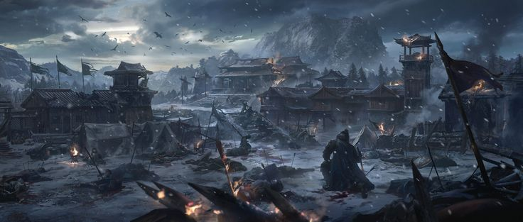

World Archive
Community History
From the first siege at Ashfall Basecamp to the global War of BaNG, this is the chronicle of commanders who shaped Vaelthorne.

Origin
The Shattering
When the Obsidian Gate ruptured beneath Highmere, survivors retreated to Ashfall Basecamp. Commanders from every shattered territory forged the first war pact, pooling relics and shadow tech to hold the toxic gold frontier.
What began as a refuge became the Cyber Warlord capital. Every global tournament still opens with a ceremonial march through Basecamp's obsidian gates.
Present Era
The War of BaNG
Named for the thunderous resonance when war engines collide at full charge, the War of BaNG defines modern conquest. Millions of commanders compete for Nexus Crystals that stabilize siege weapons and arcane artillery.
Victory is measured in territory, crystal control, and legacy rank on the global conquest board.
Chronicle
Timeline of the Cyber Legion
Year 0 — The Shattering
Fall of Highmere
The Solar Crown is lost. Survivors establish Ashfall Basecamp as the first unified war command.
Year 47 — Gold Pact
Legion Forged
Twelve war houses swear the Toxic Gold Pact, deploying the first cyber-powered siege platforms.
Year 112 — Nexus Wars
Crystal Conflicts
Nexus Crystals are discovered. Border skirmishes escalate into continent-wide campaigns.
Year 301 — Present
Global War of BaNG
All houses mobilize for total war. Commanders worldwide enter the fight for the Last Throne.